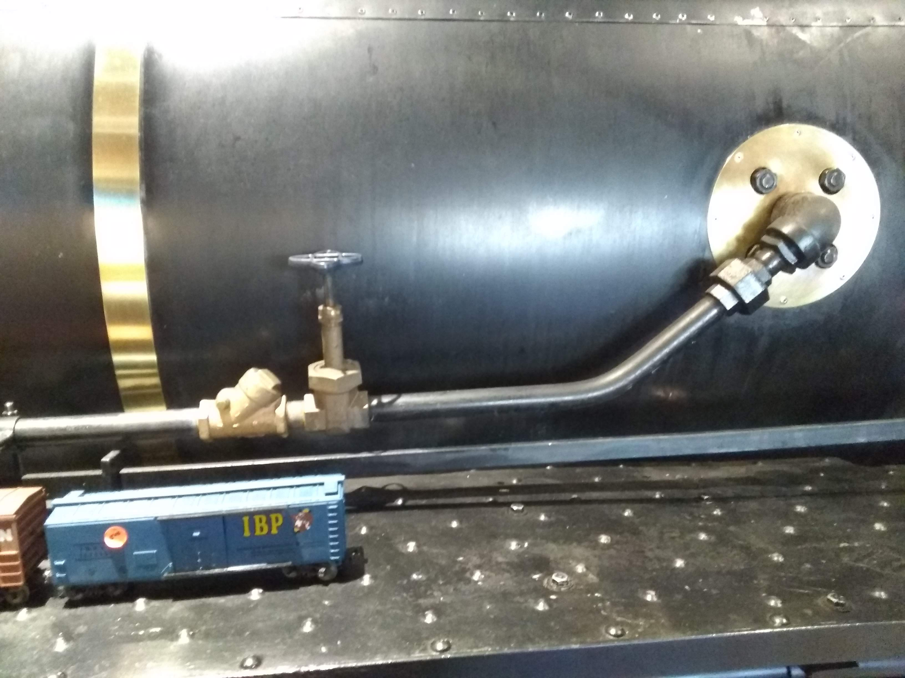
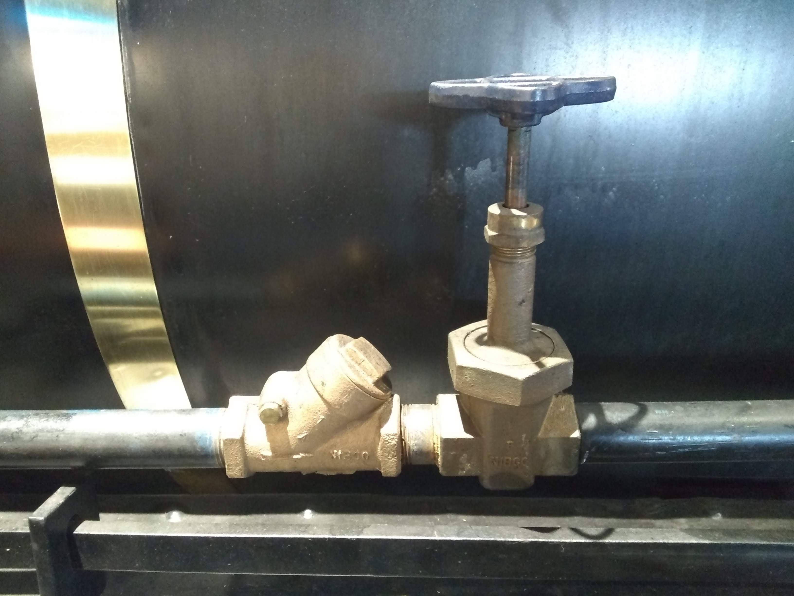
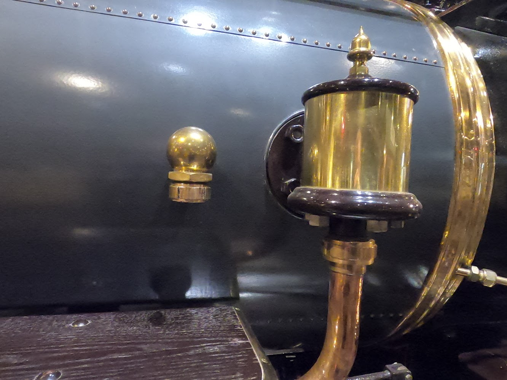
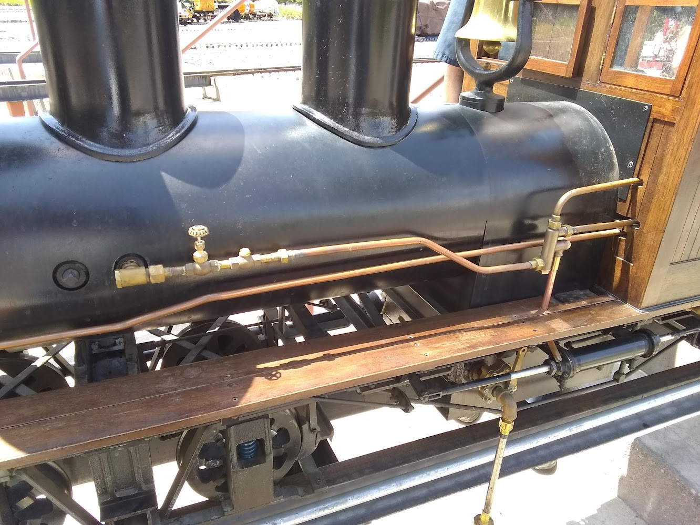
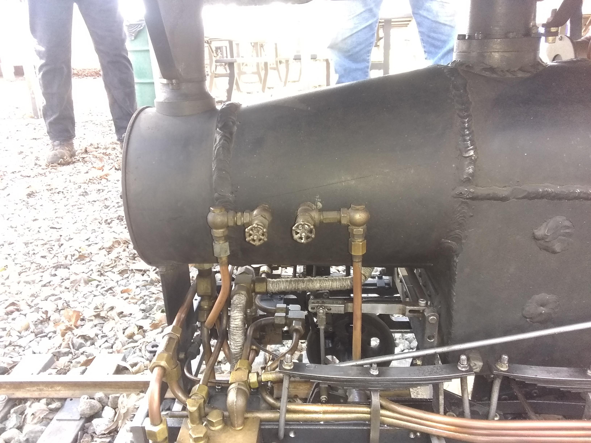
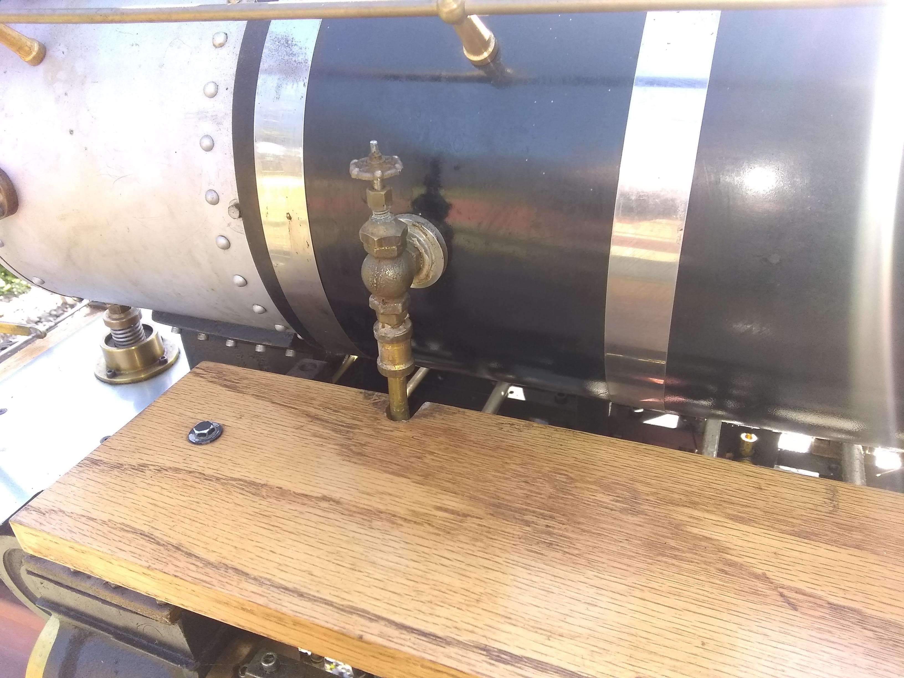
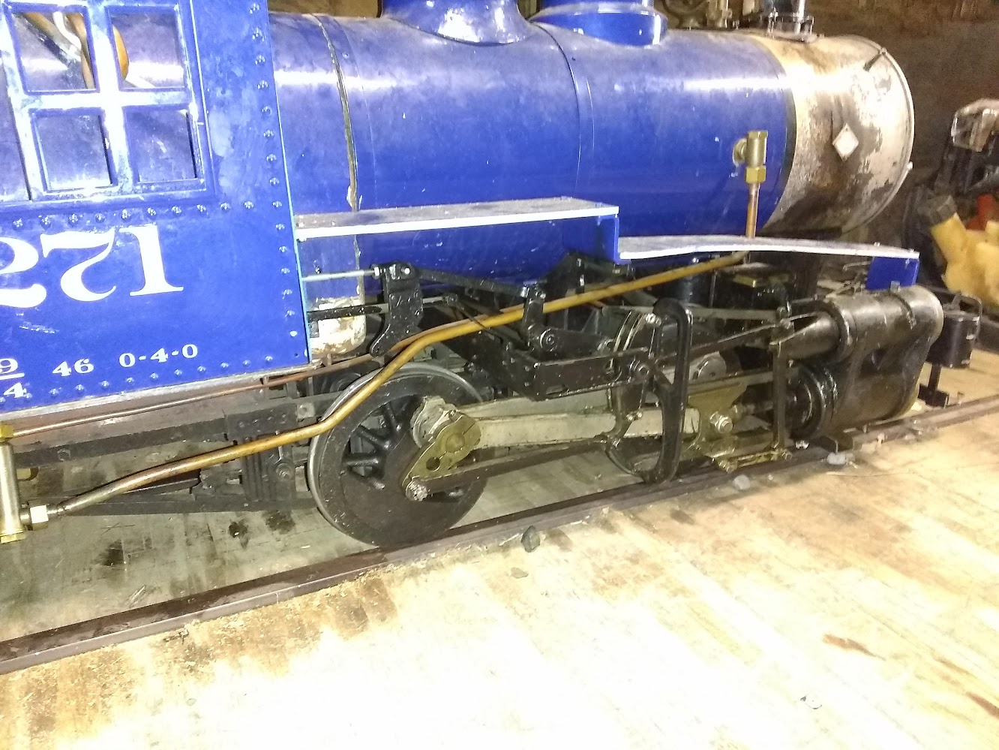
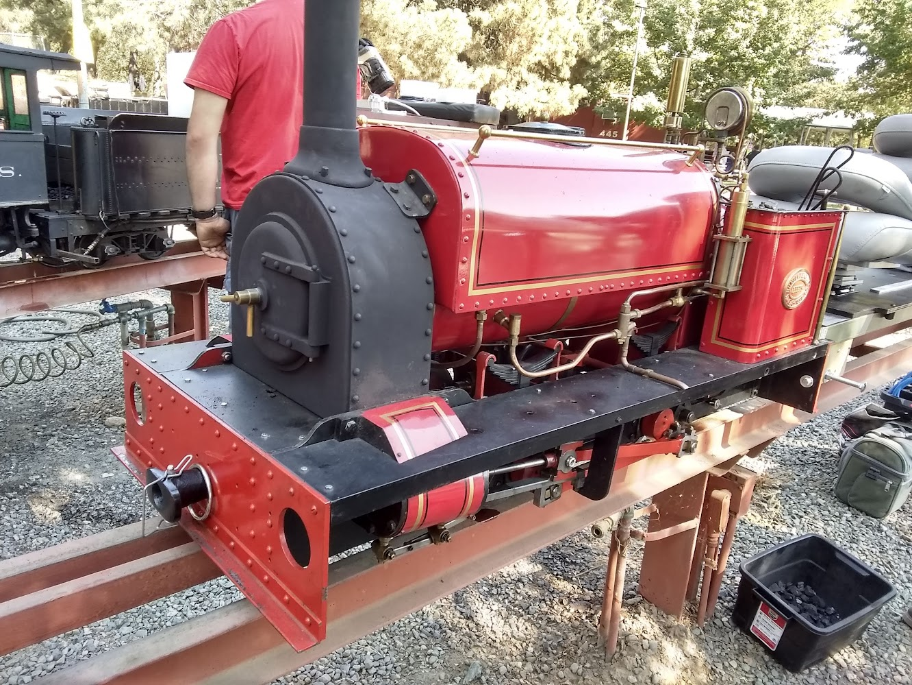
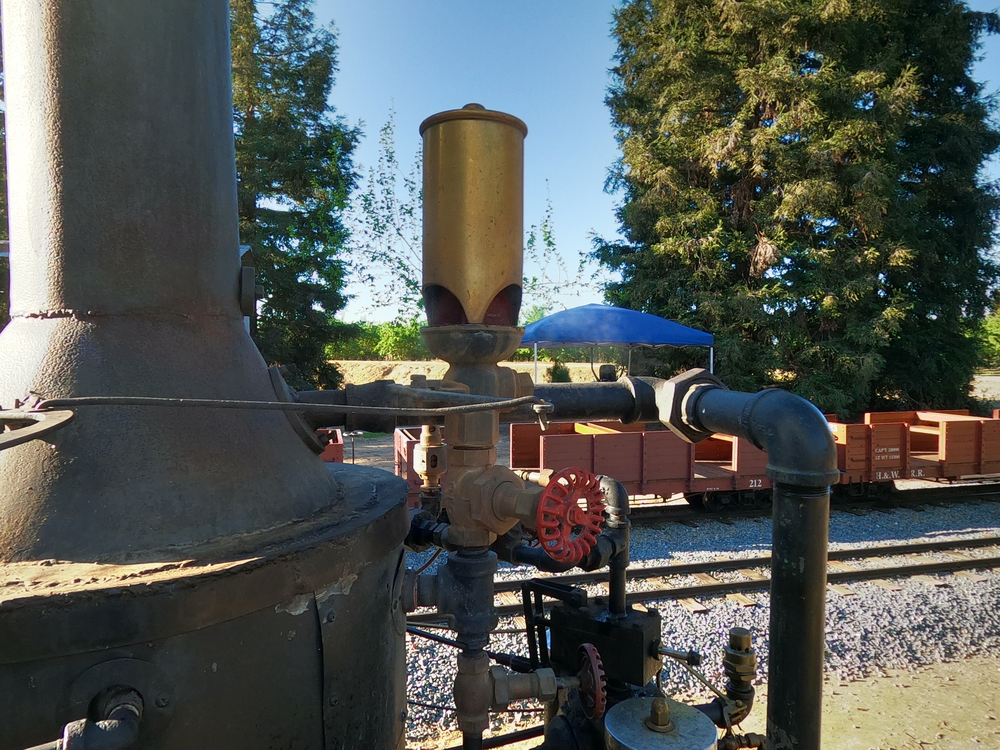
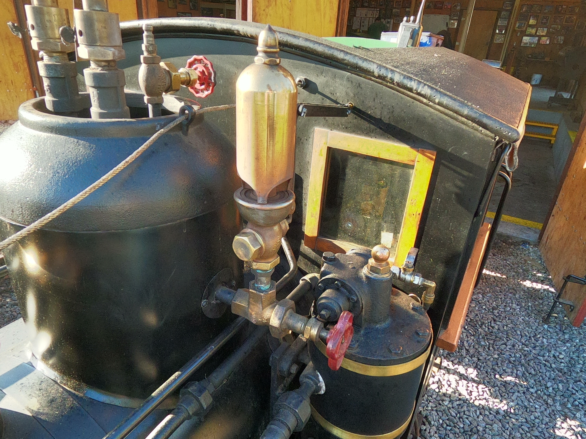

Updated: 3/12/2026 (US Date Format)
The purpose of isolation valves is to provide a superbly reliable manual cutoff of the steam supply to a steam circuit at the source.
If a steam driven appliance is in need of maintenance or there is a leak in the line an isolation valve allows you to cut off the supply of steam to the
specific cooresponding line so you can disconnect anything in the circuit and perform maintenance on it or replace it while the boiler is still in steam.
Best practice is to have the isolation valve between the boiler and check so the check can be removed from the boiler circuit while still in steam


Many early locos omitted check manual fail safes all together!!! The American check valve pictured below to the left disconnected from the injector was designed and installed with no consideration for a manual fail safe!!! Now a days check isolation valves are rarely omitted in operational full sized practice though I do know of one case: D&RG 168.

It is arguable that these valves aren't necessary on miniatures due to the significantly lower stakes, complete rapid boiler blowdowns being safe on miniatures among other reasons, but seeing as steam engineering education standards have fallen so far that even the most basic of essential features are being omitted from full sized restorations due to lack of care for best practice, I encourage anyone making a miniature to include them to serve as a good example. I believe I have seen them on more miniatures than not.



It is not uncommon for them to be omitted from miniature builds. All of these examples lack one.


In addition to allowing for disconnection for maintenance an isolation valve can be used to "choke" a whistle to limit it's maximum volume to protect the crew, passengers, and or bystandards from "permanent" hearing loss. In miniature practice whistles can be adiquately loud without being defening.

